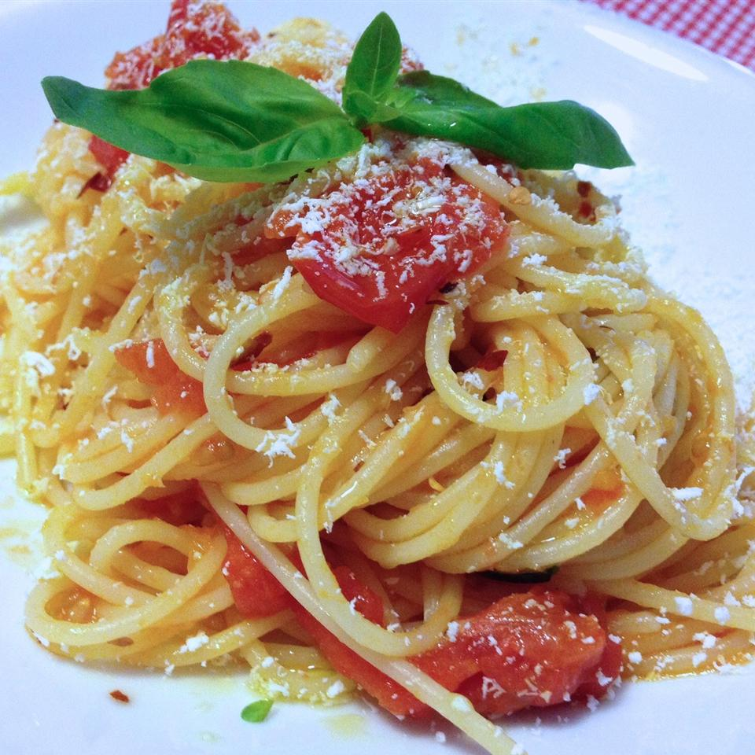

Onion Spaguetti

Description
Onion Spaghetti is a great filling vegetarian dish that comes with a BANG!
You would never guess that it's vegetarian!
Ingredients
- 2 tablespoons olive oil
- 4 large onions, sliced
- 2 cloves garlic, crushed
- 1 tablespoon tomato paste
- 1 (14.5 ounce) can whole peeled tomatoes
- 1 teaspoon salt
- ½ teaspoon freshly ground black pepper
- 1 tablespoon chopped fresh basil
- ¼ cup water
- 1 pound spaghetti
Steps
- Heat oil in a large skillet over medium heat. Cook onions and garlic
in oil until soft. Stir in tomato paste, tomatoes, salt, pepper, basil
and water. Cover, reduce heat to low, and simmer 20 minutes,
until thickened.
- While sauce is simmering, bring a large pot of lightly salted
water to a boil. Add pasta and cook for 8 to 10 minutes or until
al dente; drain.
- Toss sauce with hot pasta.
back